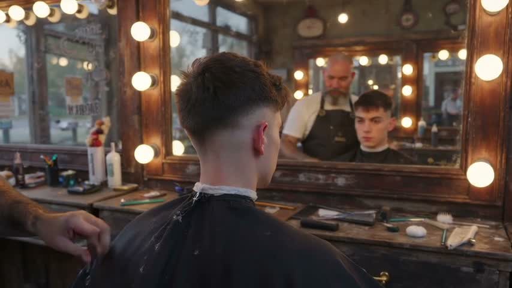
Setting. A small neighbourhood barber shop on a quiet weekday afternoon: one black leather chair in front of a wide mirror with round bulbs, a worn wooden counter with clippers, combs and a talc brush, a striped pole outside the front window, warm tungsten light inside and soft daylight from the window. Marcus, the barber, mid-forties, shaved head, grey beard, black apron over a white t-shirt. Dev, the customer, early twenties, in the chair with a black cape, short dark hair being finished into a fade.
Clip 1 (made). Marcus finishes the fade on Dev's right side with the clippers, steps back, tilts his head to check the line, then picks up the talc brush and dusts Dev's neck. Dev looks into the mirror. End on Marcus lifting the cape at Dev's shoulders, about to take it off.
Clip 2 (lost; the target). Marcus pulls the cape off with a flick and shakes it out. Dev stands, runs a hand over the fresh fade in the mirror and grins. Marcus holds up a hand mirror behind Dev's head so he can see the back; Dev nods, satisfied. They shake hands by the counter. End on Dev turning toward the door, Marcus already brushing down the chair.
Informed arms received the whole story with the clip. Blind arms received only the clip and "continue whatever is happening".
given: the story was given
inputs used: the clip's last frame as the one reference; a VLM read of three frames: "The barber begins working with a small tool at the back of the client's head and neckline, apparently finishing the haircut. He then sweeps his arm across the shoulder and neck area and starts handling the cape. As the camera closes in, he pulls the cape outward from the client's left side. The client stays seated and largely still, watching himself in the mirror. Last moment: The client's head and shoulders fill the foreground, with the back of his freshly faded haircut toward the camera and his neutral face visible in the central mirror. The barber is partly cropped at the left edge, looking down as he grips the cape near the client's left shoulder and pulls its left side outward. The white neck strip is exposed above the cape. Both remain at the chair in front of the tool-covered counter."
mechanism: image-to-video on ltx-2.5; the start frame is the seed's last frame
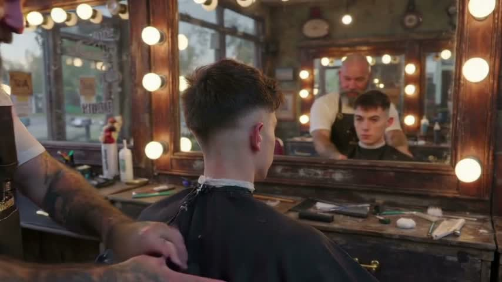
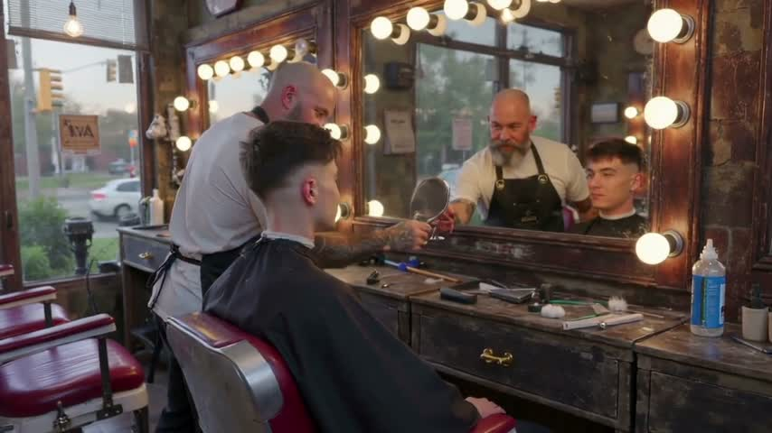
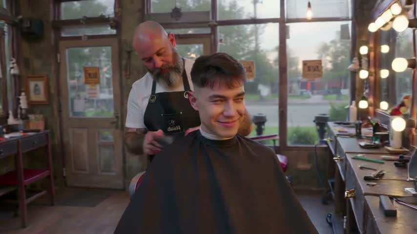
continuity yes · picks up at the last frame yes · follows the lost paragraph partly
Marcus adjusts the cape, presents a hand mirror, and brushes Dev’s shoulders while Dev stays seated and smiles, without the intended standing, handshake, or departure.
Use the supplied image as the starting frame and strict reference; continue seamlessly. 10 seconds, 16:9, audio off. PRESERVE Marcus, partly cropped at left behind Dev: bald head, long gray beard, tattooed forearms with white T-shirt/black apron. PRESERVE Dev, seated foreground center facing the mirror: thick dark top with skin fade, same youthful face, white neck strip above black cape. Preserve the worn wood counter and its tools; bulb-framed mirrors and accurate reflections; empty red-and-white chair at left; tall windows, exterior pole and traffic. Match the reference’s realism, warm bulbs, daylight and color. One continuous shot with one slow pullback, revealing room to stand without changing sides. 0–2s: continuing his existing grip at Dev’s left shoulder, Marcus flicks the cape clear of Dev’s neck and shakes it out once, then drapes it on the counter. 2–4s: Dev stands, watches himself in the central mirror, runs one hand over his fresh fade and grins. 4–6s: Marcus lifts a hand mirror from the counter behind Dev’s head, angling it toward the wall mirror; Dev looks at the reflected back of his haircut and nods, satisfied. 6–7s: Marcus lowers the mirror onto the counter; they meet eyes and exchange one brief handshake beside it, then release. 7–8s: Dev turns toward the door while Marcus picks up a brush and starts brushing down the vacated chair. Final two seconds: settle and hold on Dev, angled toward the door with a pleased face, Marcus continuing the same brushing motion behind him. Negatives: no cuts, identity drift, extra people, independent mirror figures, warped hands, extra limbs, intersecting bodies, floating tools, cape clipping, text or audio.
given: the clip only; the VLM proposed: "The barber would likely continue loosening and drawing the cape away from the client's shoulders, gathering it to keep loose hair contained. The client would probably remain seated facing the mirror while the barber finishes this cleanup; he might then be ready to get out of the chair."
inputs used: the clip's last frame as the one reference; a VLM read of three frames: "The barber begins working with a small tool at the back of the client's head and neckline, apparently finishing the haircut. He then sweeps his arm across the shoulder and neck area and starts handling the cape. As the camera closes in, he pulls the cape outward from the client's left side. The client stays seated and largely still, watching himself in the mirror. Last moment: The client's head and shoulders fill the foreground, with the back of his freshly faded haircut toward the camera and his neutral face visible in the central mirror. The barber is partly cropped at the left edge, looking down as he grips the cape near the client's left shoulder and pulls its left side outward. The white neck strip is exposed above the cape. Both remain at the chair in front of the tool-covered counter."
mechanism: image-to-video on ltx-2.5; the start frame is the seed's last frame
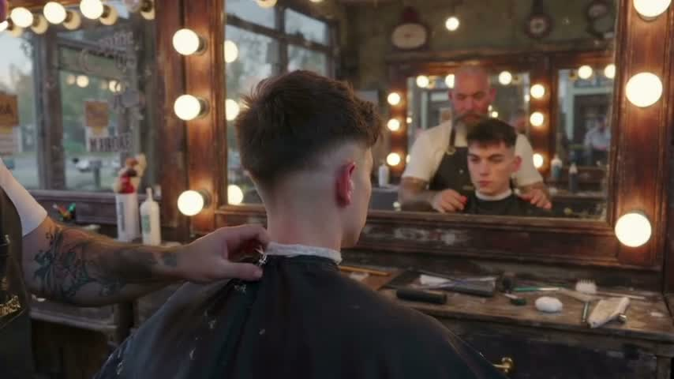
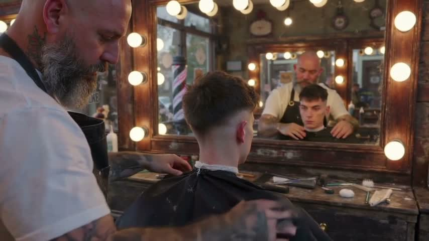
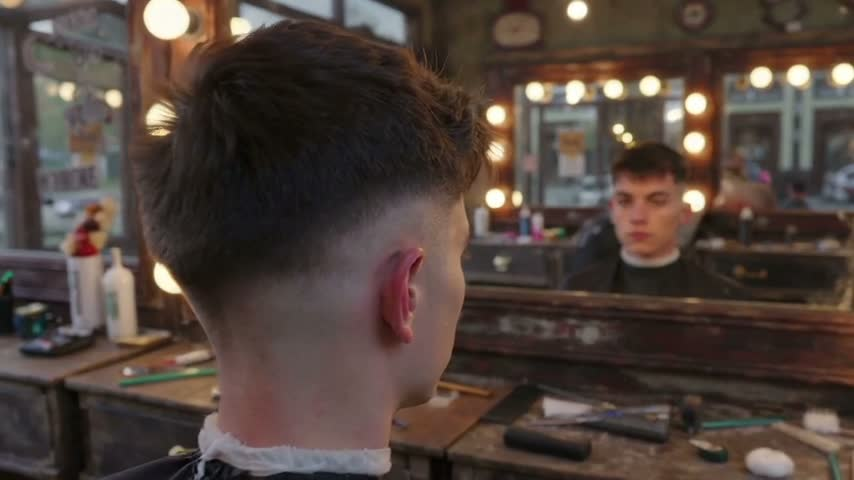
continuity yes · picks up at the last frame yes · follows the lost paragraph no
Marcus adjusts and smooths the cape around Dev’s shoulders while Dev remains seated facing the mirror, ending on a closer view of his fade rather than the intended reveal, handshake and departure.
Use the supplied image as the starting frame and strict reference, continuing directly without a reset. 10 seconds, 16:9, audio off. Preserve the reference’s realism, warm bulb-and-daylight mix, color, and camera style. PRESERVE barber, partly cropped at frame left behind the client: bald head; long gray beard; tattooed forearms, with the same white T-shirt and black apron. PRESERVE client, seated upright in the foreground center facing the mirror: thick dark top hair; precise skin fade; white neck strip above the black cape. Preserve the worn wooden counter and its existing tools and bottles in place; preserve the wooden mirrors and glowing bulbs; preserve the empty red-and-white chair at left if visible; preserve windows, barber pole, and street background. Mirror figures remain accurate reflections of these same two people. One continuous shot with one very slow forward camera push. Begin with the barber’s hand already gripping the cape outward at the client’s left shoulder, exactly matching the supplied frame. Looking down, he maintains that grip while his other hand carefully releases the cape at the back of the neck. He then draws the loosened cape gently forward and down, clearing the nape while keeping the client’s torso covered. The white neck strip stays in place; the client remains still, watching his reflection with a neutral expression. Keep the hands’ contact and fabric tension physically coherent. Finish with the fresh fade prominent and the client’s reflected face clearly visible, holding this composition for the final two seconds. Negatives: no cuts, new people, duplicated bodies, independent reflections, identity drift, altered haircut, malformed hands, fabric clipping, lighting shifts, text, or sound.
given: the story was given
inputs used: the seed video attached
mechanism: create_video_from_text on minimax-h3 with the seed VIDEO as a named reference (@original)
it asked first: [{"agent":"I can generate a **10-second, 16:9 silent continuation at 480p**, but I can’t extract the attached clip’s final frame or append footage with the available tools.\n\nPlease attach a still of the **exact last frame** so I can use it as the starting image and preserve continuity. I’ll genera
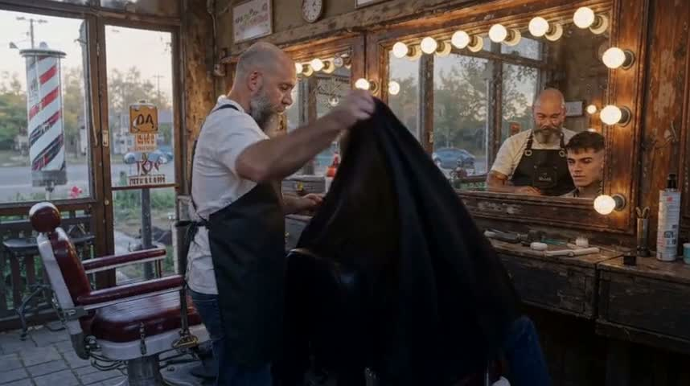
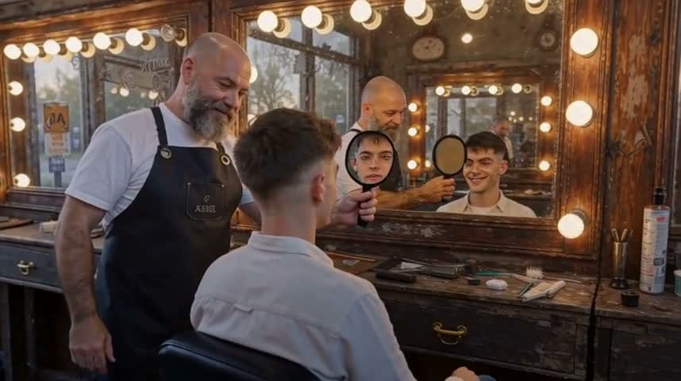
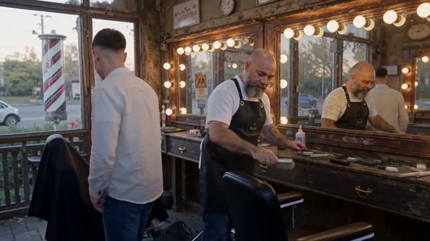
continuity yes · picks up at the last frame yes · follows the lost paragraph partly
Marcus removes the cape, presents a hand mirror while Dev remains seated and smiles, then brushes the chair as Dev turns toward the door, but the mirror reflection is incorrect and the hair-touching, nod and handshake are not evident in the supplied frames.
Generate only the NEXT 10 seconds of @original, continuing chronologically from its final moment, not replaying its existing actions. Use the ending of the reference video as the visual continuity anchor: match the same two adult men, their faces, clothing, shop layout, lighting, props, framing and cinematic realism. Opening moment: Marcus has just lifted the black cape at Dev's shoulders and is about to remove it. Marcus is the barber, mid-forties, shaved head, grey beard, black apron over a white T-shirt. Dev is the adult customer, early twenties, freshly finished short dark fade. Small neighbourhood barber shop on a quiet weekday afternoon: one black leather chair before a wide mirror with round bulbs, worn wooden counter with clippers, combs and talc brush, striped pole outside front window, warm tungsten interior and soft window daylight. A natural brisk sequence over exactly 10 seconds: 0–2s Marcus pulls off the cape with a flick and shakes it out, revealing Dev in a plain casual shirt; 2–4s Dev stands beside the chair, runs a hand over his fresh fade while looking in the wide mirror and grins; 4–6s Marcus holds a hand mirror behind Dev's head to show the back in the main mirror, and Dev nods with satisfaction; 6–8s they share a brief friendly handshake beside the counter; 8–10s Dev turns toward the door while Marcus begins brushing loose hair off the now-empty black leather chair. Maintain accurate mirror reflections, coherent hand interactions, stable identities and spatial continuity. Understated realistic acting, fluid plausible motions. Widescreen 16:9, silent, no dialogue, no music, no captions, no added text. Do not include the reference clip itself in the output.
given: the clip only
inputs used: the seed video attached
mechanism: create_video_from_text on minimax-h3 with the seed VIDEO as a named reference (@source)
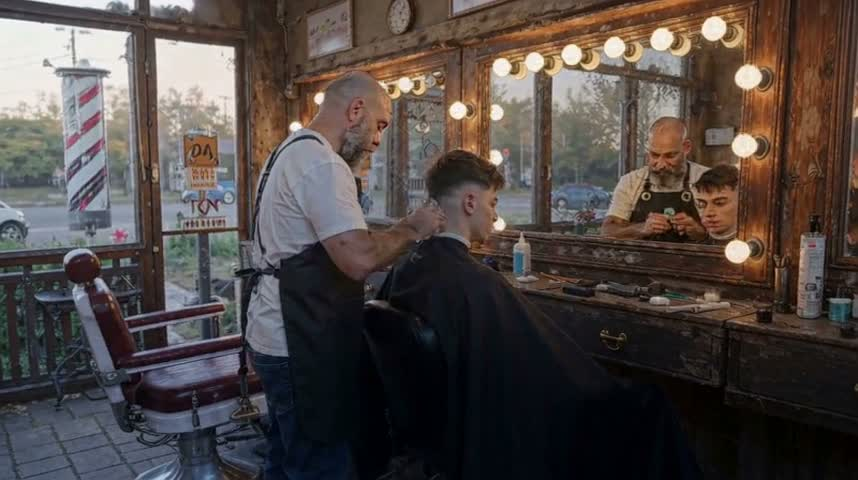
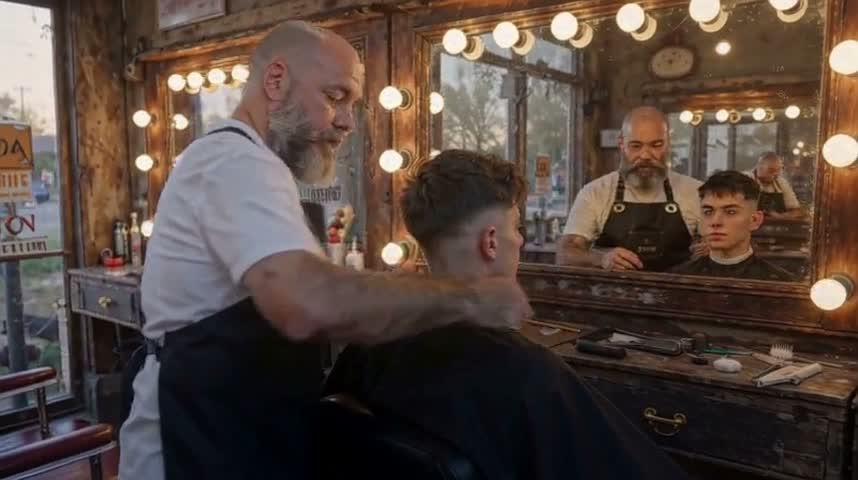
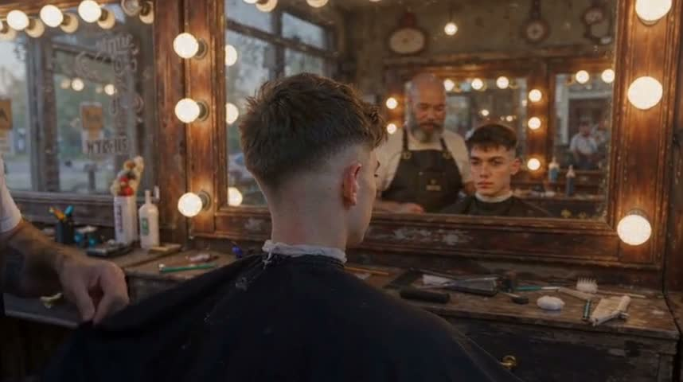
continuity yes · picks up at the last frame yes · follows the lost paragraph no
Marcus works around Dev’s neckline and adjusts the cape while Dev remains seated facing the mirror, without the standing, hand-mirror reveal, handshake, or departure.
Generate only the next 10 seconds immediately AFTER the end of reference video @source, not a remake or recap of the reference. Use the final frame and final motion of @source as the starting state. Continue whatever action is underway naturally, in real time, preserving the same people, appearance, clothing, tools, setting, lighting, shot composition, camera angle and visual style. Maintain motion direction and spatial continuity from the ending. No reset to the beginning, no repeated earlier actions, no cuts, no transitions, no time jump, no new people or invented events. Match the existing camera behavior; if stationary keep it stationary. Widescreen 16:9, silent, no music, no speech, no sound, no text or overlays.